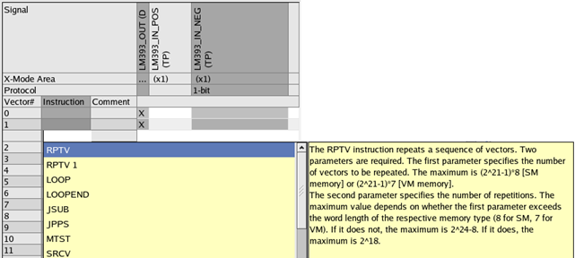
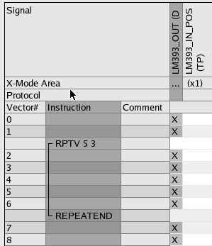

Inserting, editing, and deleting sequencer instructions
The Pattern Editor allows you to insert sequencer instructions into a pattern, and also to edit and delete sequencer instructions.
Before you begin
Make sure the Pattern Editor is open with the pattern where you want to insert sequencer instructions, see Opening the Pattern Editor.
The Instruction column must be
displayed. If the Instruction column is not visible, click the  (Hide all instructions in current editor) icon. For details on hiding or showing
individual columns see Pattern Editor.
(Hide all instructions in current editor) icon. For details on hiding or showing
individual columns see Pattern Editor.
Procedures
To insert a sequencer instruction:
- Open the pattern where you want to insert a sequencer instruction.
- Make sure the pattern is displayed in collapsed mode. The mode
(Collapsed or Expanded) is displayed in the
status line at the bottom of the SmarTest main window. If the pattern is displayed in expanded
mode, click
 (Switch to collapsed mode).
(Switch to collapsed mode). - To highlight the line where you want to insert the sequencer instruction, click the line in the Vector# or Instruction column.
- Right-click and select Insert Instruction. A list box with all sequencer instructions appears.
- To display a description click any of the instructions. For a description of all sequencer
instructions see Sequencer instructions.

- To insert an instruction double-click it. The list box disappears and the sequencer instruction is inserted.
- To acknowledge it, press Enter.
If the sequencer instruction requires parameters, type them and press Enter. Tool tips tell you the necessary parameters.

To insert a sequencer instruction, you may also click an empty cell in the Instruction column, type the instruction string, and press Enter.
To edit a sequencer instruction:
Double-click the sequencer instruction, type the modifications, and press Enter.
To delete a sequencer instruction:
Highlight the start or end of the instruction, right-click and select Delete Instruction.
Functional changes
- SmarTest 6.5.2: Modified layout of sequencer instructions in Pattern Editor.